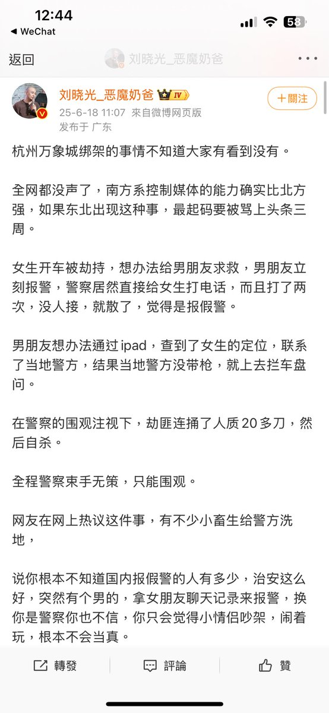
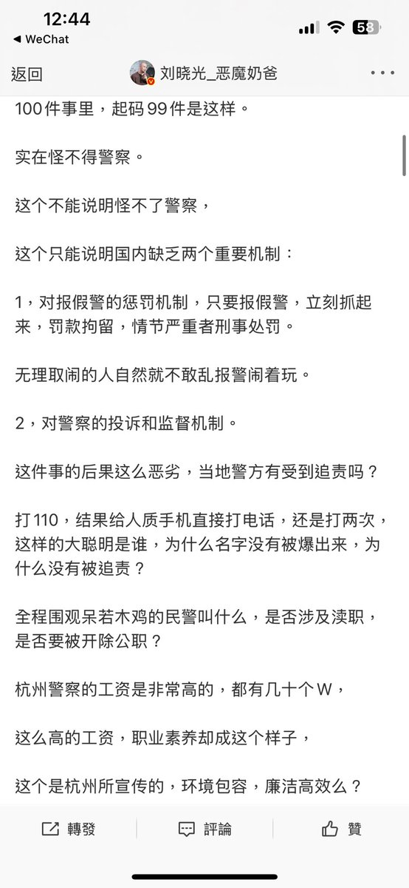
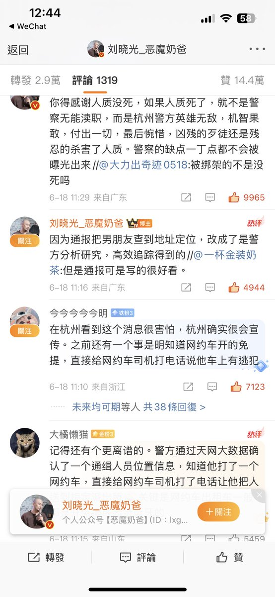
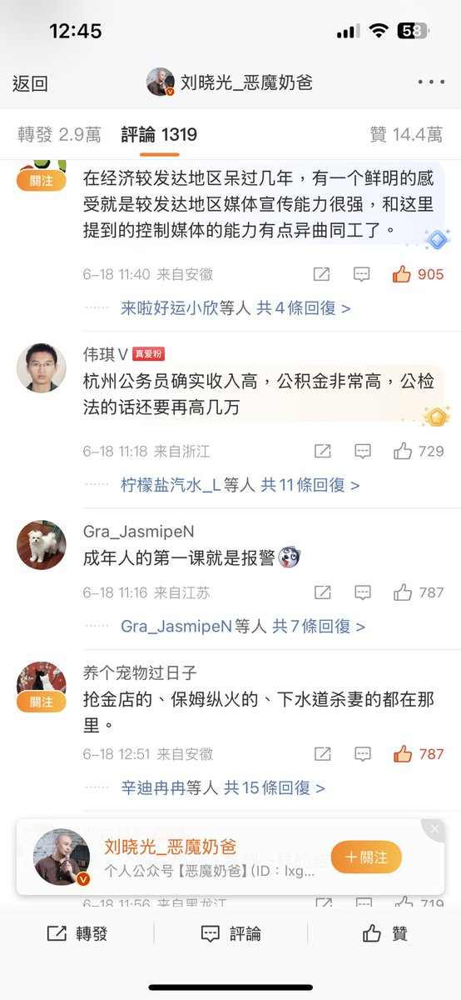

月影独下
@tadatsukiei
@wodanggangqiang 我也对中国警察没什么好印象，问就是，“喂，我手机被偷了，现在通过定位看到被偷的手机就在xx小区里，你过来带我进小区就行，我去找那人要回来”，“不行我们没这个权力”




我当刚强壮胆
@wodanggangqiang
杭州万象城绑架的事情不知道大家有看到没有。
全网都没声了，南方系控制媒体的能力确实比北方强，如果东北出现这种事，最起码要被骂上头条三周。
女生开车被劫持，想办法给男朋友求救，男朋友立刻报警，警察居然直接给女生打电话，而且打了两次，没人接，就散了，觉得是报假警。 https://t.co/rWkIyHyYMR